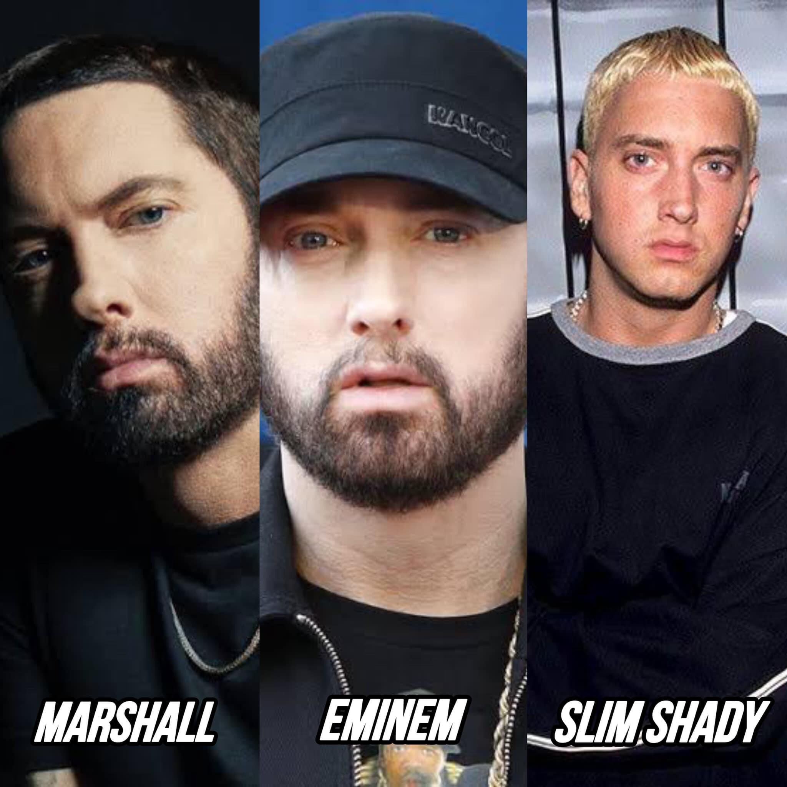

EMINEM
Marshall Bruce Mathers III
Artista/Hip Hop Rap
Eminem, M&M, Rabbit

Marshall Bruce Mathers III (St. Joseph, 17 de octubre de 1972), conocido artísticamente como Eminem, es un rapero,
productor y actor estadounidense. Se le atribuye la popularización del hip hop en las clases medias y altas de Estados Unidos
y es aclamado por la crítica como uno de los mejores raperos de todos los tiempos. Se considera que el éxito mundial y las obras
aclamadas de Eminem rompieron las barreras raciales para la aceptación de los raperos blancos en la música popular. Si bien gran
parte de su trabajo transgresor a fines de la década de 1990 y principios de la de 2000 lo hizo muy controvertido, llegó a ser
una «representación» de la angustia popular de la clase baja estadounidense y ha sido citado como una influencia para muchos
artistas de varios géneros.
Su canción mas conocida es The Real Slim Shady, dale click encima
y escuchala
Arte
Eminem ha citado a varios MC que influyeron en su estilo de rap, incluidos Esham,234 Kool G Rap,235 Masta Ace,
Big Daddy Kane,235 Newcleus, Ice-T, Mantronix, Melle Mel —en «The Message»—, LL Cool J, Beastie Boys, Run-D.M.C., Rakim y
Boogie Down Productions.236 En How to Rap, Guerilla Black señala que Eminem estudió a otros MC para perfeccionar su técnica
de rap: «Eminem escuchó todo y eso es lo que lo convirtió en uno de los grandes».237 En el libro, otros MC también elogian aspectos
de su técnica de rap: temas variados y humorísticos,238 conectarse con su audiencia,239 transmitir un concepto a lo largo de una
serie de álbumes,240 esquemas de rima complejos,241 doblar palabras para que rimen,242 rimas polisilábicas,235 muchas rimas en un
compás,243 ritmos complejos,244 enunciación clara,245 y el uso de la melodía246 y la síncopa.247 Se sabe que Eminem escribe la
mayoría de sus letras en papel —documentado en The Way I Am—, tardando varios días o una semana en escribir letras,248 siendo un
«adicto al trabajo»249 y «apilando» voces.250 Ejemplos de subgéneros de hip hop en los que se ha descrito la música de Eminem
incluyen horrorcore,251252253 comedy hip hop,254 y hardcore hip hop.255256 Eminem también incorpora rap rock en su música y ha
citado actos de rock durante las décadas de 1970 y 1980, como Jimi Hendrix y Led Zeppelin, como influencias en su música.
Alter Egos
Eminem usa alter ego en sus canciones para diferentes estilos de rap y temas. Su alter ego más conocido, Slim Shady,
apareció por primera vez en el Slim Shady EP y estuvo en The Slim Shady LP, The Marshall Mathers LP, The Eminem Show, Encore,
Relapse, The Marshall Mathers LP 2, Kamikaze y Music to Be Murdered By. En este personaje, sus canciones son violentas y oscuras,
con un toque cómico.261 Eminem restó importancia a Slim Shady en Recovery porque sintió que no encajaba con el tema del álbum.
Otro personaje es Ken Kaniff, un homosexual que se burla de las canciones de Eminem. Ken fue creado e interpretado originalmente
por su compañero rapero de Detroit Aristóteles en Slim Shady LP, donde Kaniff hace una broma telefónica a Eminem. Una discusión
después del lanzamiento del álbum llevó a Eminem a usar el personaje de Kaniff en Marshall Mathers y álbumes posteriores —excepto
Encore y Recovery—. Aristotle, enojado con el uso de su personaje por parte de Eminem, lanzó un mixtape en su personaje de Kaniff
ridiculizándolo.
Familia
Eminem ha sido analizado, tanto como rapero como personalidad.45 Estuvo casado dos veces con Kimberly Anne Scott.
Conoció a Scott en la escuela secundaria mientras estaba parado en una mesa sin camisa rapeando «I'm Bad» de LL Cool J.323 Scott
y su hermana gemela Dawn se habían escapado de casa; se mudaron con Eminem y su madre cuando él tenía 15 años y comenzó una relación
intermitente con Scott en 1989.
Mathers y Scott se casaron en 1999 y se divorciaron en 2001. Su hija Hailie nació el 25 de diciembre de 1995.
Aunque Eminem le dijo a Rolling Stone en 2002: «Preferiría tener un bebé a través de mi pene que volver a casarme»,
él y Scott se volvieron a casar brevemente en enero de 2006. Solicitó el divorcio a principios de abril324 y acordó la custodia
compartida de Hailie.325 Hailie es una influencer de las redes sociales, específicamente en moda y belleza.326
Información basado en Wikipedia Eminem-Wikipedia
Wikipedia.com
s